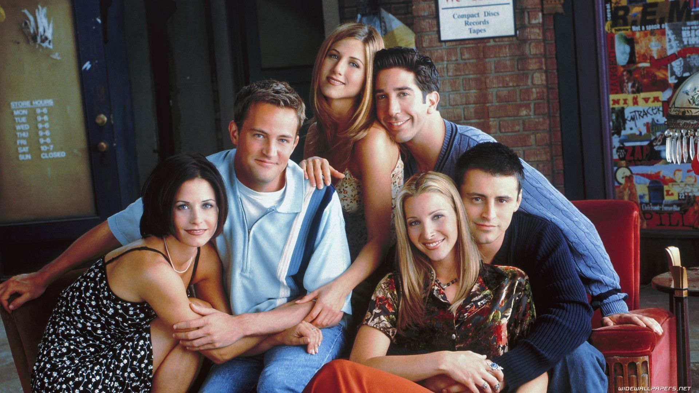

Friends is an American television sitcom created by David Crane and Marta Kauffman, which aired on NBC from September 22, 1994, to May 6, 2004, lasting ten seasons. [1] With an ensemble cast starring Jennifer Aniston, Courteney Cox, Lisa Kudrow, Matt LeBlanc, Matthew Perry and David Schwimmer, the show revolves around six friends in their 20s and 30s who live in Manhattan, New York City. The series was produced by Bright/Kauffman/Crane Productions, in association with Warner Bros. Television. The original executive producers were Kevin S. Bright, Kauffman, and Crane.  Kauffman and Crane began developing Friends under the working title Insomnia Cafe between November and December 1993. They presented the idea to Bright, and together they pitched a seven-page treatment of the show to NBC. After several script rewrites and changes, including title changes to Six of One[2] and Friends Like Us, the series was finally named Friends.[3] Friends received acclaim throughout its run, becoming one of the most popular television shows of all time.[9] The series was nominated for 62 Primetime Emmy Awards, winning the Outstanding Comedy Series award in 2002[10] for its eighth season. The show ranked no. 21 on TV Guide's 50 Greatest TV Shows of All Time,[11] and no. 5 on Empire magazine's The 50 Greatest TV Shows of All Time.[12] In 1997, the episode "The One with the Prom Video" was ranked no. 100 on TV Guide's 100 Greatest Episodes of All-Time.[13] In 2013, Friends ranked no. 24 on the Writers Guild of America's 101 Best Written TV Series of All Time,[14] and no. 28 on TV Guide's 60 Best TV Series of All Time.[15] The sitcom's cast members returned for a reunion special aired on HBO Max on May 27, 2021.